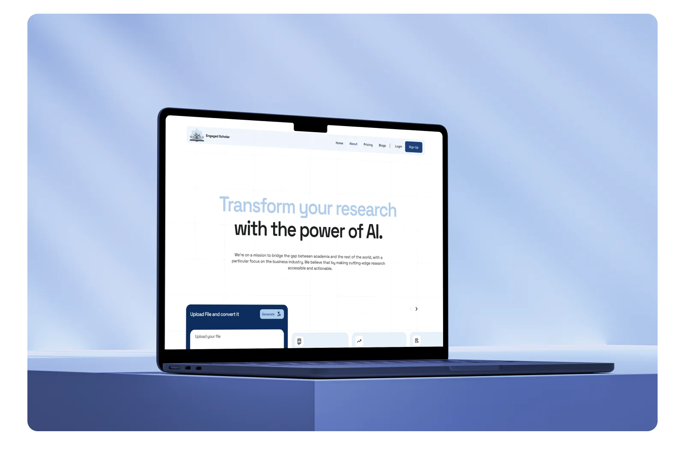
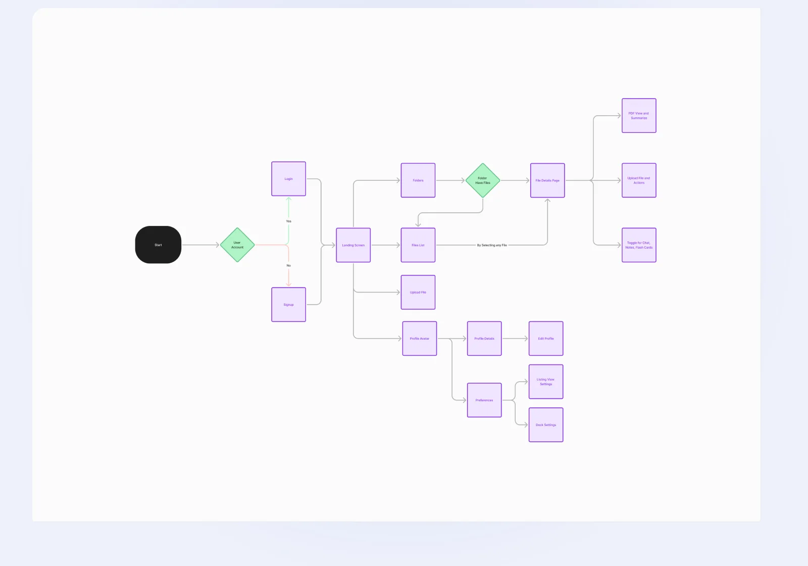
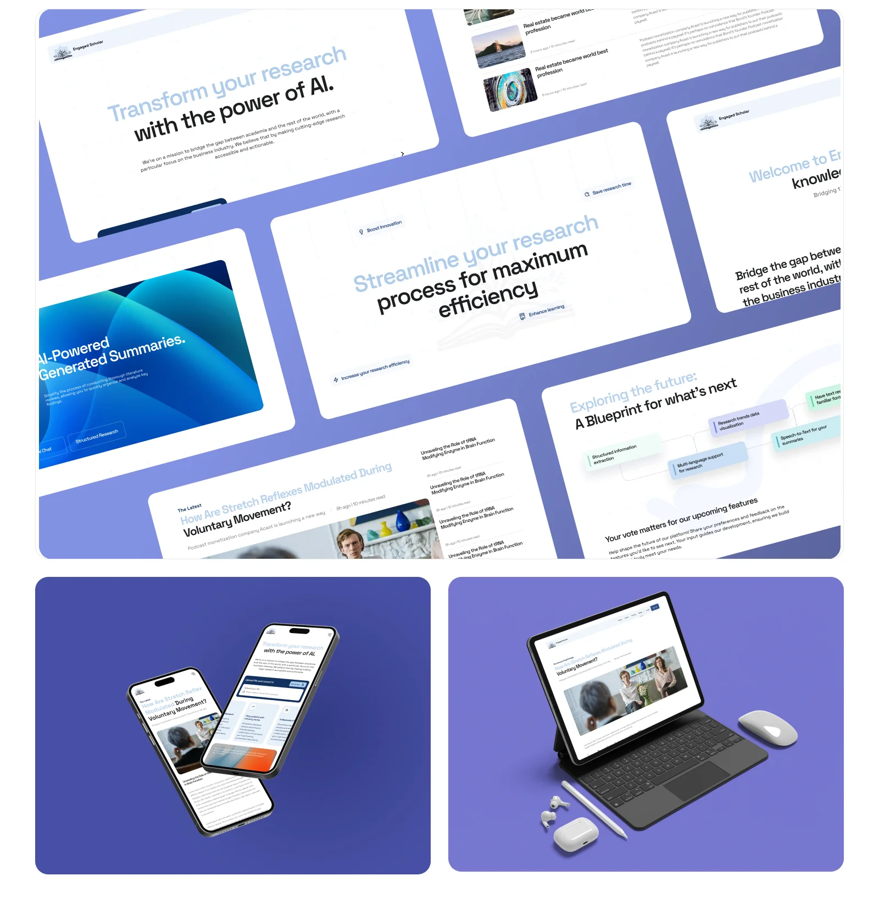
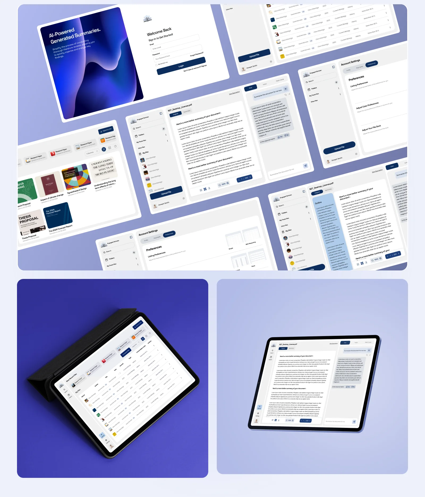
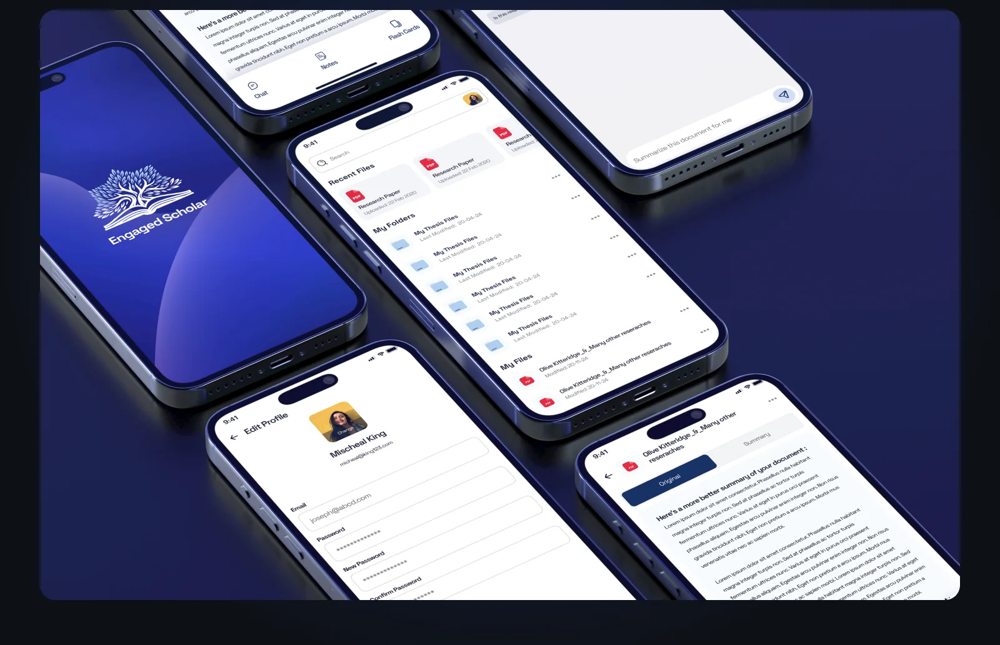

Engaged Scholar
Reimagining the Engaged Scholar platform for web and mobile.
- Platform
- Web and mobile app
- Product
- AI research summarising platform
- Deliverables
- User flow, web portal UI, mobile app UI

The client
Engaged Scholar is on a mission to bridge the gap between academia and the rest of the world, with a particular focus on the business industry, by making cutting-edge research accessible and actionable.
Users were struggling to pull the key information out of long documents.
Summarising by hand is slow, especially across large volumes of text, and existing tools often lack accuracy, clarity and ease of use.
An AI-powered summarising portal for web and mobile.
Concise AI-generated summaries, with chat, note-taking and flashcards in one place, and the same experience on every device.
Objectives and goals
Enhance user satisfaction
By prioritising user feedback and continuous iteration, the platform keeps meeting users’ evolving needs, leading to higher satisfaction and retention.
Foster collaboration
Chat, note-taking and flashcards create an interactive environment where users collaborate, share insights and reinforce their learning in a single platform.
Consistency across devices
A cohesive experience on web and mobile, with functionality and design consistent across platforms.
Accessibility
Intuitive navigation and clear instructional cues make the platform usable at every level of expertise.
Platform user flow

A user-centric web journey
The AI summarising portal is designed with a focus on intuitive navigation and a streamlined user flow. Each element serves a purpose, so users can reach core features and complete tasks without friction.

Smart and seamless: the portal design
Every design choice prioritises clarity and ease of use. The layout guides users through the platform’s features, making complex AI capabilities accessible for all.

Extending the platform to mobile
To broaden accessibility, a mobile application brings AI-driven summaries to users’ fingertips, so they can reach key information quickly on the go.

What the client said
“The AI summarizing platform has truly transformed how we manage and process information at Engaged Scholar. The mobile app’s intuitive interface and powerful AI capabilities allow us to access concise, accurate summaries on the go, saving valuable time.”
Kate Smith, Founder, Engaged Scholar